动态组件扩展
在应用运行期间，使用代码动态的生成可视组件并设置属性，不需要提前在设计界面拖入很多组件。
Credit:
This extension is inspired on the fabulous work of Yusuf Cihan: GitHub - ysfchn/DynamicComponents-AI2
所有功能块
创建组件
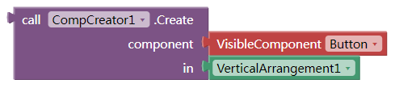
component：是要创建的组件的类型（文本字串），这里推荐使用选项下拉框输入.
in：是新组件的父容器，需要是个容器类组件。
Known issue:
The dynamic component will not be listed by “Every Component”, which is newly added in MIT AI2 2.66.
But you can use the ListComponents function of this extension.
组件列表
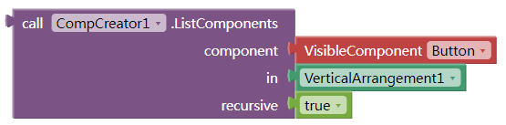
可以返回同类型的组件列表
recursive: boolean. If true, it will return all components with same type. If false, it will return only the direct children.
移除组件
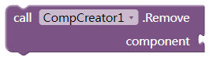
component：要删除的组件，而不是他的类型。如果他是容器类，他的所有子组件也会被移除。
设置属性
这个块的大部分功能可以使用内置的任意组件块来实现。
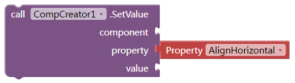
component：要设置属性的组件
property：要设置的组件的属性。可以是以下3种情况:
- 可以是组件的自带的属性，必须是英文（推荐使用下拉框输入）；
- 可以是“index”，用来设置组件的排列顺序；
- 可以是其他自定义的属性，比如id，parent之类的任意文本，中英皆可。相当于附在组件上的一个字典（键值对）。
value：新的属性值
获取属性
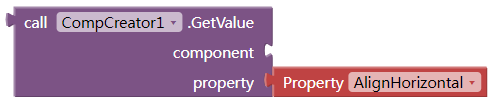
这个块的大部分功能可以使用内置的任意组件块来实现。
获取子组件列表和父组件
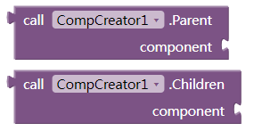
只适用于获取动态生成的子组件列表或他的父组件
从8.4版本以后，可以支持所有组件（动态的或者手动添加的）获取子组件和父组件。
已知问题：在伴侣中获取Screen的子部件会返回错误的列表。apk中没有问题。
从模板创建
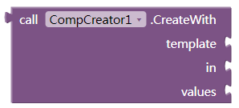
返回值是创建的最外层的容器组件
template: json字符串，创建一组组件需要的模板文本。
in: 容器组件
values: 列表。传入组件模板的值。
可以根据以下格式手动编写，或者在MIT服务器上的设计界面手动添加需要的界面（一条记录），根据需要设置相应的组件属性。选中最外层组件，键盘上按下Ctrl + C，然后在任何文本编辑器里面按键盘上的Ctrl+V，就可以得到模板了
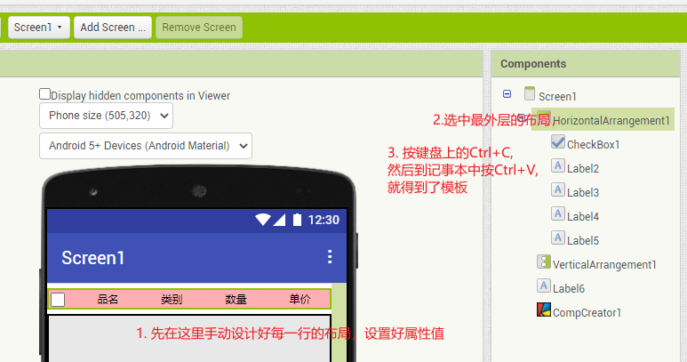
{
"$components": [
{
"$Name": "VerticalArrangement1",
"$Type": "VerticalArrangement",
"$Version": "4",
"Uuid": "-444056707",
"$Components": [
{
"$Name": "Button2",
"$Type": "Button",
"$Version": "7",
"Text": "Text for Button2",
"TextColor": "&HFFFF00FF",
"Uuid": "12991510"
}
]
}
],
"$blocks": []
}
以下模板中的$Name,$Version,Uuid,$blocks几个键是从mit自动转换来的，模板中并不需要。你可以把它们删掉，也可以保留，扩展会自动忽略他们。
$Components 和$Type是必须保留的。
如果你想在运行时替换模板中的属性值，可以像下图这样，替换成{1}, {2}, {3}…这样。
{
"$components": [
{
"$Name": "VerticalArrangement1",
"$Type": "VerticalArrangement",
"$Version": "4",
"Uuid": "-444056707",
"$Components": [
{
"$Name": "Button2",
"$Type": "Button",
"$Version": "7",
"Text": "{1}",
"TextColor": "{2}",
"Uuid": "12991510"
}
]
}
],
"$blocks": []
}
然后这样使用模板,新生成的按钮就可以有新的文本和颜色了：
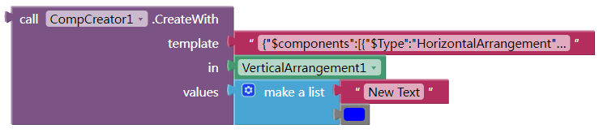
添加删除点击事件
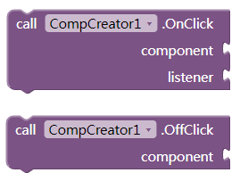
为新建组件添加或取消点击事件。
listener: 过程名。需要手动创建一个过程名，包含一个参数，该参数即为被点击的组件。
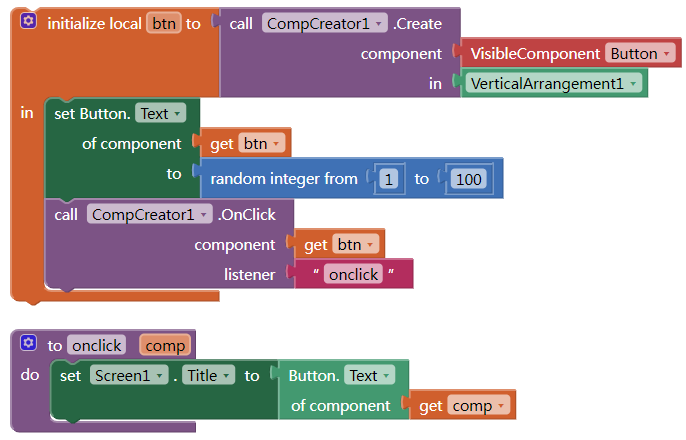
下载地址：
扩展aix：
cn.kevinkun.CompCreator-V8.9.aix
cn.kevinkun.CompCreator-V8.10-bugfix.aix
示例aia:
compcreator-listview-by-template.aia
更多示例及用法，可以参考这里